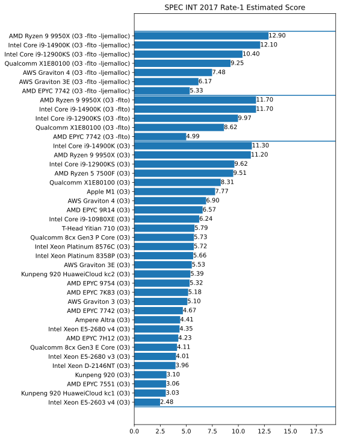
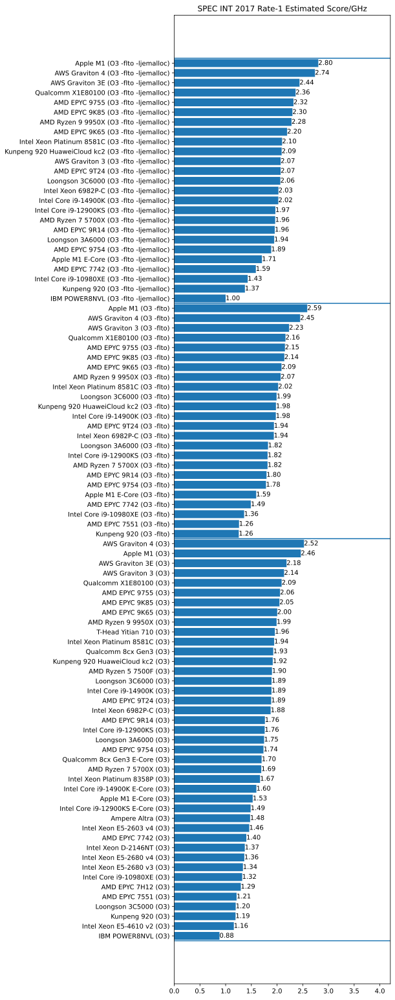
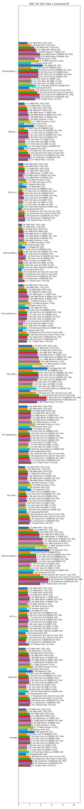
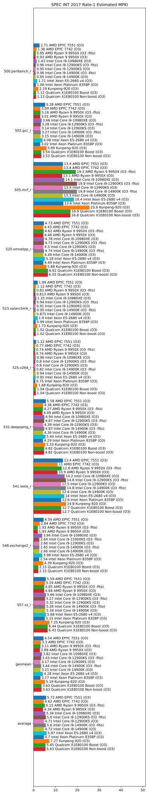
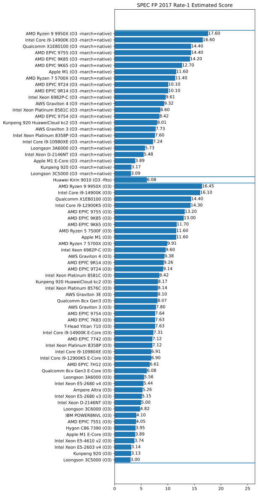
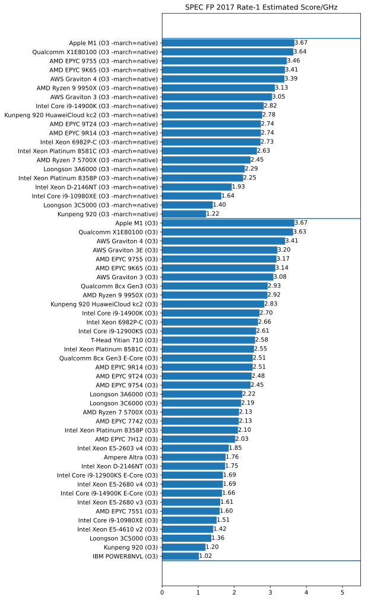
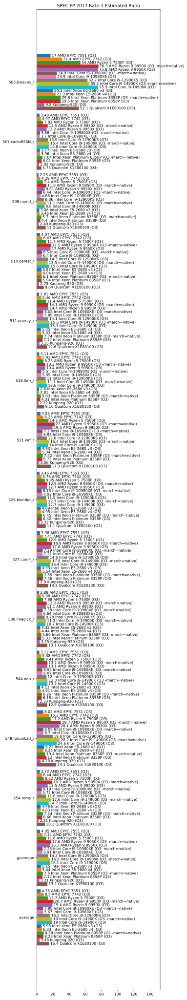
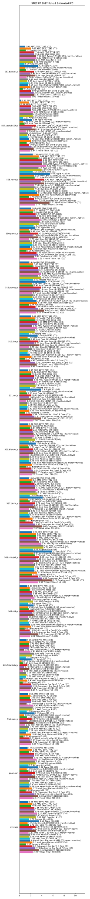
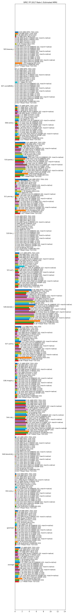
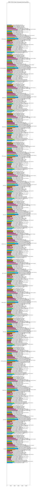

性能测试¶
测试环境¶
测试环境如下：
- 大部分测试：Debian Bookworm, GCC 12.2.0
- LoongArch 测试：Debian sid, GCC 14.2.0
- HarmonyOS NEXT 测试：HarmonyOS NEXT 5，Clang 15.0.4 + Flang 20.0.0，详见 jiegec/SPECCPU2017Harmony
注意事项¶
注意事项如下：
- 分数只有在控制变量时（即一般所说的“用相同二进制测得”，此外还有一些影响性能的变量见下）可以用来比较相同指令集的不同处理器的性能，即通过测试结果比较：
- AMD64 指令集的 Intel 和 AMD 处理器的性能
- ARM64 指令集的 Apple、ARM、Huawei 和 Qualcomm 处理器的性能
- LoongArch 指令集的不同处理器的性能
- 用分数来进行不同指令集的处理器之间的性能比较，则说服力较弱
- 即使是相同硬件，如下因素都可能对测试结果产生显著的影响：
- 不同编译器（例如同等编译选项下 GCC 通常比 Clang 快）
- 不同编译器版本（通常新版本比旧版本快，但也有反例）
- 不同编译选项（例如是否开 LTO，是否设置 -march=native）
- 不同的内存分配器实现（libc 自带 malloc 或 jemalloc）
- 不同的标准库实现（比如 glibc 还是 musl）
- 不同的调频、调度或绑核策略（比如不当的绑核让频率从 4.0GHz 降到 3.4GHz）
- 不同的内核版本（比如部分内核版本会明显劣化性能）
如果您需要引用本文的测试结果，请保证您对以上注意事项有充分的理解。
SPEC INT 2017 Rate-1¶
下面贴出自己测的数据（SPECint2017，Estimated，rate，base，1 copy），不保证满足 SPEC 的要求，仅供参考。总运行时间（秒）基本和分数成反比，乘积按 5e4 估算。
数据总览¶

分数/GHz

每项分数

IPC

分支预测 MPKI

分支预测错误率

频率

原始数据¶
桌面平台（-march=native + LTO + Jemalloc）：
- Qualcomm X1E80100 @ 4.0 GHz X Elite（
-O3 -march=native -flto -ljemalloc）: 9.43 - AMD Ryzen 7 5700X @ 4.65 GHz Zen 3（
-O3 -march=native -flto -ljemalloc）: 9.28
桌面平台（LTO + Jemalloc）：
- AMD Ryzen 9 9950X @ 5.7 GHz Zen 5（
-O3 -flto -ljemalloc）: 12.9 - Intel Core i9-14900K @ 6.0 GHz Raptor Cove（
-O3 -flto -ljemalloc）: 12.1 - Intel Core i9-12900KS @ 5.5 GHz Golden Cove（
-O3 -flto -ljemalloc）: 10.7 - Qualcomm X1E80100 @ 4.0 GHz X Elite（
-O3 -flto -ljemalloc）: 9.25 - AMD Ryzen 7 5700X @ 4.65 GHz Zen 3（
-O3 -flto -ljemalloc）: 9.13 - Apple M1 @ 3.2 GHz Firestorm（
-O3 -flto -ljemalloc）: 8.93 - Intel Core i9-10980XE @ 4.8 GHz Cascade Lake（
-O3 -flto -ljemalloc）: 6.70 - Loongson 3A6000 @ 2.5 GHz LA664（
-O3 -flto -ljemalloc）: 4.86
桌面平台（LTO）：
- AMD Ryzen 9 9950X @ 5.7 GHz Zen 5（
-O3 -flto）: 11.7 - Intel Core i9-14900K @ 6.0 GHz Raptor Cove（
-O3 -flto）: 11.7 11.7 - Intel Core i9-12900KS @ 5.5 GHz Golden Cove（
-O3 -flto）: 9.97 - Qualcomm X1E80100 @ 4.0 GHz X Elite（
-O3 -flto）: 8.62 - AMD Ryzen 7 5700X @ 4.65 GHz Zen 3（
-O3 -flto）: 8.44 - Apple M1 @ 3.2 GHz Firestorm（
-O3 -flto）: 8.24 - Intel Core i9-10980XE @ 4.8 GHz Cascade Lake（
-O3 -flto）: 6.37 - Loongson 3A6000 @ 2.5 GHz LA664（
-O3 -flto）: 4.56
桌面平台：
- Intel Core i9-14900K @ 6.0 GHz Raptor Cove（
-O3）: 11.3 - AMD Ryzen 9 9950X @ 5.7 GHz Zen 5（
-O3）: 11.2 11.3 - Intel Core i9-12900KS @ 5.5 GHz Golden Cove（
-O3）: 9.62 - AMD Ryzen 5 7500F @ 5.0 GHz Zen 4（
-O3）: 9.51 - Qualcomm X1E80100 @ 4.0 GHz X Elite（
-O3）: 8.31 - AMD Ryzen 7 5700X @ 4.65 GHz Zen 3（
-O3）: 7.87 - Apple M1 @ 3.2 GHz Firestorm（
-O3）: 7.85 - Intel Core i9-14900K E Core @ 4.4 GHz Gracemont（
-O3）: 7.03 - Intel Core i9-10980XE @ 4.8 GHz Cascade Lake（
-O3）: 6.24 - Intel Core i9-12900KS E Core @ 4.1 GHz Gracemont（
-O3）: 6.08 - Qualcomm 8cx Gen3 P Core @ 3.0 GHz Cortex-X1C（
-O3）: 5.73 - Loongson 3A6000 @ 2.5 GHz LA664（
-O3）: 4.35 4.39 - Qualcomm 8cx Gen3 E Core @ 2.4 GHz Cortex-A78C（
-O3）: 4.11
服务器平台（-march=native + LTO + Jemalloc）：
- Loongson 3C6000 @ 2.2 GHz LA664（
-O3 -march=native -flto -ljemalloc）: 4.65
服务器平台（LTO + Jemalloc）：
- AMD EPYC 9T24 @ 3.7 GHz Zen 4（
-O3 -flto -ljemalloc）: 7.64 - AWS Graviton 4 @ 2.8 GHz Neoverse V2（
-O3 -flto -ljemalloc）: 7.48 - Intel Xeon 6982P-C @ 3.4 GHz Redwood Cove（
-O3 -flto -ljemalloc）: 7.20 - Intel Xeon Platinum 8581C @ 3.4 GHz Raptor Cove（
-O3 -flto -ljemalloc）: 6.87 - AWS Graviton 3E @ 2.6 GHz Neoverse V1（
-O3 -flto -ljemalloc）: 6.17 - Kunpeng 920 HuaweiCloud kc2 @ 2.9 GHz（
-O3 -flto -ljemalloc）: 6.00 - AMD EPYC 7742 @ 3.4 GHz Zen 2（
-O3 -flto -ljemalloc）: 5.33 - IBM POWER8NVL @ 4.0 GHz POWER8（
-O3 -flto -ljemalloc）: 4.02 - Kunpeng 920 @ 2.6 GHz TaiShan V110（
-O3 -flto -ljemalloc）: 3.57
服务器平台（LTO）：
- AMD EPYC 9T24 @ 3.7 GHz Zen 4（
-O3 -flto）: 7.19 - Intel Xeon Platinum 8581C @ 3.4 GHz Raptor Cove（
-O3 -flto）: 6.67 - Intel Xeon 6982P-C @ 3.4 GHz Redwood Cove（
-O3 -flto）: 6.60 - Kunpeng 920 HuaweiCloud kc2 @ 2.9 GHz（
-O3 -flto）: 5.65 - AMD EPYC 7742 @ 3.4 GHz Zen 2（
-O3 -flto）: 5.02 - Loongson 3C6000 @ 2.2 GHz LA664（
-O3 -flto）: 4.39 - Kunpeng 920 @ 2.6 GHz TaiShan V110（
-O3 -flto）: 3.26 - AMD EPYC 7551 @ 2.5 GHz Zen 1（
-O3 -flto）: 3.19
服务器平台：
- AMD EPYC 9T24 @ 3.7 GHz Zen 4（
-O3）: 6.95 - AWS Graviton 4 @ 2.8 GHz Neoverse V2（
-O3）: 6.80 7.00 - AMD EPYC 9R14 @ 3.7 GHz Zen 4（
-O3）: 6.57 - Intel Xeon Platinum 8581C @ 3.4 GHz Raptor Cove（
-O3）: 6.52 - Intel Xeon 6982P-C @ 3.4 GHz Redwood Cove（
-O3）: 6.38 - T-Head Yitian 710 @ 3.0 GHz Neoverse N2（
-O3）: 5.79 - Intel Xeon Platinum 8576C Raptor Cove（
-O3）: 5.72 - Intel Xeon Platinum 8358P @ 3.4 GHz Sunny Cove（
-O3）: 5.66 - Kunpeng 920 HuaweiCloud kc2 @ 2.9 GHz（
-O3）: 5.39 5.40 - AMD EPYC 9754 @ 3.1 GHz Zen 4c（
-O3）: 5.32 - AMD EPYC 7K83 Zen 3（
-O3）: 5.18 - AWS Graviton 3E @ 2.6 GHz Neoverse V1（
-O3）: 5.53 - AWS Graviton 3 @ 2.6 GHz Neoverse V1（
-O3）: 5.10 - AMD EPYC 7742 @ 3.4 GHz Zen 2（
-O3）: 4.73 - Ampere Altra @ 3.0 GHz Neoverse N1（
-O3）: 4.41 - Intel Xeon E5-2680 v4 @ 3.3 GHz Broadwell（
-O3）: 4.35 - AMD EPYC 7H12 @ 3.3 GHz Zen 2（
-O3）: 4.23 - Loongson 3C6000 @ 2.2 GHz LA664（
-O3）: 4.19 - Intel Xeon E5-2680 v3 @ 3.0 GHz Haswell（
-O3）: 4.01 - Intel Xeon D-2146NT @ 2.9 GHz Skylake（
-O3）: 3.96 - IBM POWER8NVL @ 4.0 GHz POWER8（
-O3）: 3.54 - Kunpeng 920 @ 2.6 GHz TaiShan V110（
-O3）: 3.10 - Kunpeng 920 HuaweiCloud kc1 @ 2.6 GHz（
-O3）: 3.03 - AMD EPYC 7551 @ 2.5 GHz Zen 1（
-O3）: 3.07 - Intel Xeon E5-4610 v2 @ 2.7 GHz Ivy Bridge EP（
-O3）: 3.06 - Hygon C86 7390（
-O3）: 2.97 - Loongson 3C5000 @ 2.2 GHz LA464（
-O3）: 2.63 - Intel Xeon E5-2603 v4 @ 1.7 GHz Broadwell（
-O3）: 2.48
手机平台（LTO）：
- Huawei Kirin 9010 @ 2.3 GHz （
-O3 -flto）: 3.99
注：
- SPEC INT 2017 Rate-1 结果受
-flto（分数 +4%，主要优化 mcf/deepsjeng）和-ljemalloc（分数 +4-10%，主要优化 omnetpp/xalancbmk）影响很明显。-Ofast和-O3区别很小，-march=native影响很小。 - 在部分处理器上，Linux 不能保证程序被调度到性能最高的核心上，例如：
- Qualcomm X1E80100 上，负载不一定会调度到有 Boost 的核上，因此需要手动绑核。没有 Boost 的核心会跑在 3.4 GHz，Boost 的核心最高可以达到 4.0 GHz，对应 14% 的性能提升。具体地讲，它有三个 Cluster，0-3 是没有 Boost 的 Cluster，4-7 和 8-11 每个 Cluster 中可以有一个核心 Boost 到 4.0 GHz，也就是说，最多有两个核达到 4.0 GHz，这两个核需要分别位于 4-7 和 8-11 两个 Cluster 当中。如果一个 Cluster 有两个或者以上的核有负载，那么他们都只有 3.4 GHz。
- AMD Ryzen 9 9950X 不同核能够达到的最大频率不同，目前 Linux（6.11）的调度算法不一定可以保证跑到最大频率 5.75 GHz 上，可能会飘到频率低一些（5.45 GHz 左右）的核心上，损失 4% 的性能，因此需要绑核心，详见 Linux 大小核的调度算法探究 以及 谈谈 Linux 与 ITMT 调度器与多簇处理器。这个问题已经有 Patch 进行修复。
- 对于服务器 CPU，默认设置可能没有打开 C6 State，此时单核不一定能 Boost 到宣称的最高频率，需要进 BIOS 打开 C6 State，使得空闲的核心进入低功耗模式，才能发挥出最高的 Boost 频率。
- 对于除了苹果以外的 ARM64 核心，内核的 branch-misses 计数器考虑了 speculative 而不只是 retired，因此数字会偏高，此时要用 r22 计数替代。
-
Google Cloud 只有部分机型（如 C4 和 C4A）支持 PMU，并且需要手动开启（参考 Enable the PMU in VMs）：
$ gcloud compute instances export VM_NAME \ --destination=YAML_FILE \ --zone=ZONE $ vim YAML_FILE # append the following lines advancedMachineFeatures: performanceMonitoringUnit: STANDARD $ gcloud compute instances update-from-file VM_NAME \ --most-disruptive-allowed-action=RESTART \ --source=YAML_FILE \ --zone=ZONE
x86 平台的分支预测准确率（Average）由高到低（-O3）：
- Zen 5(AMD 9950X): MPKI=4.48 Mispred=2.52%
- Zen 4 Server(AMD 9R14): MPKI=4.53 Mispred=2.56%
- Zen 4c(AMD 9754): MPKI=4.66 Mispred=2.63%
- Zen 4 Desktop(AMD 7500F)/Zen 3(AMD 5700X): MPKI=4.68 Mispred=2.64%
- Zen 2(AMD 7742): MPKI=4.77 Mispred=2.69%
- Redwood Cove(Intel 6982P-C): MPKI=4.77 Mispred=2.71%
- Sunny Cove(Intel 8358P)/Golden Cove(Intel 12900KS)/Raptor Cove(Intel 14900K/Intel 8581C): MPKI=4.86 Mispred=2.75%
- Gracemont(Intel 12900KS/Intel 14900K): MPKI=5.15 Mispred=2.92%
- Skylake(Intel D-2146NT)/Cascade Lake(Intel 10980XE): MPKI=5.50 Mispred=3.13%
- Zen 1(AMD 7551): MPKI=5.82 Mispred=3.31%
- Haswell(Intel E5-2680 v3)/Broadwell(Intel E5-2680 v4): MPKI=5.98 Mispred=3.34%
x86 平台的分支预测准确率（Average）由高到低（-O3 -flto）：
- Zen 5(AMD 9950X): MPKI=5.35 Mispred=3.07%
- Zen 2(AMD 7742): MPKI=5.52 Mispred=3.17%
- Zen 3(AMD 5700X): MPKI=5.55 Mispred=3.19%
- Redwood Cove(Intel 6982P-C): MPKI=5.70 Mispred=3.29%
- Golden Cove(Intel 12900KS)/Raptor Cove(Intel 14900K/Intel 8581C): MPKI=5.81 Mispred=3.37%
- Cascade Lake(Intel 10980XE): MPKI=6.55 Mispred=3.83%
- Zen 1(AMD 7551): MPKI=6.86 Mispred=4.02%
ARM64 平台的分支预测准确率（Average）由高到低（-O3）：
- Neoverse V2(AWS Graviton 4): MPKI=4.50 Mispred=2.47%
- Oryon(Qualcomm X1E80100): MPKI=4.71 Mispred=2.58%
- Neoverse N2(Aliyun Yitian 710): MPKI=4.80 Mispred=2.64%
- Firestorm(Apple M1): MPKI=4.82 Mispred=2.63%
- Neoverse V1(AWS Graviton 3/AWS Graviton 3E)/Cortex X1C(Qualcomm 8cx Gen3 P Core): MPKI=4.91 Mispred=2.69%
- Neoverse N1(Ampere Altra)/Cortex A78C(Qualcomm 8cx Gen3 E Core): MPKI=5.21 Mispred=2.87%
- TSV110(Hisilicon Kunpeng 920): MPKI=6.54 Mispred=3.58%
ARM64 平台的分支预测准确率（Average）由高到低（-O3 -flto）：
- Oryon(Qualcomm X1E80100): MPKI=5.41 Mispred=3.13%
- Firestorm(Apple M1): MPKI=5.45 Mispred=3.14%
- TSV110(Hisilicon Kunpeng 920): MPKI=6.74 Mispred=3.98%
LoongArch64 平台的分支预测准确率（Average）由高到低（-O3）：
- LA664(3A6000/3C6000): MPKI=5.01 Mispred=2.79%
- LA464(3C5000): MPKI=8.39 Mispred=4.21%
网上的数据¶
- Apple M4 Pro: 13.7
- AMD Ryzen 9950X Zen 5: 12.6
- Apple M3 Pro: 11.8
- Intel Core 13900K Raptor Cove: 11.5
- Intel Core Ultra 7 265K Arrow Lake Lion Cove+Skymont: 11.1
- AMD AI Max+ 395 Zen 5: 10.6
- Apple M2 Pro: 10.3
- Apple M2: 9.95
- AMD HX 370 Strix Point Zen 5: 9.64
- Intel Core Ultra 258V Lunar Lake Lion Cove+Skymont: 9.46
- Apple M1 Max Firestorm: 9.2
- AMD Ryzen 5950X Zen 3: 9.15
- Kunpeng 920 TSV120: 6.00
- Loongson 3A6000 LA664: 4.29
- Phytium D3000 FTC862: 4.24
- Loongson 3A5000 LA464: 3.04
高通 X Elite Oryon 微架构评测：走走停停 by JamesAslan:
- AMD Ryzen 7700X Zen 4: 10.35
- Intel Core 13700K Raptor Cove: 9.81
- Intel Core 12700K Golden Cove: 9.13
- AMD Ryzen 5950X Zen 3: 8.45
- Apple M2 Avalanche+Blizzard: 8.40
- Qualcomm X1E80100 Oryon: 8.19
- Apple M1 Firestorm+Icestorm: 7.40
- Qualcomm 8 Gen 2 Cortex-X3: 6.58
Running SPEC CPU2017 on Chinese CPUs, and More
- AMD Ryzen 9 7950X3D Non-VCache: 10.5
- Intel Core Ultra 7 258V Lion Cove: 9.37
- Intel Core Ultra 7 115H Redwood Cove: 7.6
- Intel Core Ultra 7 258V Skymont: 5.92
- Intel Core Ultra 7 115H Crestmont: 5.88
- Intel Core i5-6600K Skylake: 5.65
- Loongson 3A6000 LA664: 4.27
- Mediatek Genio 1200 Cortex A78: 3.8
- AMD FX-8150: 3.5
- Intel Core Ultra 7 115H Low Power Crestmont: 3.32
- Loongson 3A5000: 2.93
- Intel Celeron J4125 Goldmont Plus: 2.43
- Zhaoxin KaiXian KX-6640MA: 2.07
- Amlogic S922X Cortex A73: 1.77
- Mediatek Genio 1200 Cortex A55: 1.19
Running SPEC CPU2017 at Chips and Cheese?
- AMD Ryzen 9 9950X: 11.9
- AMD Ryzen 9 7950X3D Non-VCache: 10.5
- AMD Ryzen 9 7950X3D VCache: 10.5
- Intel Core Ultra 7 115H Redwood Cove: 7.58
- Intel Core Ultra 7 115H Crestmont: 5.34
- AMD Ryzen 9 3950X 3.5GHz: 5.28
- Ampere Altra: 3.98
- AmpereOne: 3.94
- AMD FX-8159: 3.46
The AMD Ryzen 9 9950X and Ryzen 9 9900X Review: Flagship Zen 5 Soars - and Stalls
- AMD Ryzen 9 9950X Zen 5: 10.95
- Intel Core i9-14900K Raptor Cove: 10.94
- AMD Ryzen 9 7950X Zen 4: 9.88
Snapdragon X Elite Qualcomm Oryon CPU Design and Architecture Hot Chips 2024
- Qualcomm X Elite Oryon on Linux: 10.64
- Qualcomm X Elite Oryon on Windows: 9.70
- Zen 3 @ 4.95 GHz: 8.4
- Firestorm @ 3.0 GHz: 7.4
- Cortex X1 @ 3.0 GHz: 5.7
- Cortex A78 @ 2.4 GHz: 3.9
极客湾•麒麟 9010，测评汇总：IPC 性能，巨幅提升！CPU 能效全频段领先，麒麟 9000S！
- Huawei Kirin 9010: 4.54
- HUawei Kirin 9000s: 4.06
GCC 12 vs GCC 11 vs LLVM 19 vs LLVM 20¶
在 Intel i9-14900K 上用 -O3 测试四种编译器组合的性能：
| Benchmark | GCC 12.2.0 | GCC 11.3.0 | LLVM 19.1.4 | LLVM 20.1.0 |
|---|---|---|---|---|
| 500.perlbench_r | 12.9 | 12.8 | 10.9 | 10.9 |
| 502.gcc_r | 14.4 | 14.3 | 13.6 | 13.6 |
| 505.mcf_r | 9.62 | 9.82 | 8.51 | 8.29 |
| 520.omnetpp_r | 9.72 | 9.59 | 8.63 | 8.80 |
| 523.xalancbmk_r | 9.48 | 9.66 | 8.86 | 8.79 |
| 525.x264_r | 18.7 | 20.4 | 19.4 | 19.9 |
| 531.deepsjeng_r | 8.15 | 7.27 | 7.41 | 7.17 |
| 541.leela_r | 7.40 | 7.37 | 7.44 | 7.41 |
| 548.exchange2_r | 29.8 | 17.1 | 14.3 | 10.9 |
| 557.xz_r | 5.97 | 5.85 | 6.22 | 5.70 |
| geomean | 11.3 | 10.6 | 9.91 | 9.54 |
注：GCC 指 GCC + GFortran，LLVM 指 Clang + Flang-new
SPEC FP 2017 Rate-1¶
下面贴出自己测的数据（SPECfp2017，Estimated，rate，base，1 copy），不保证满足 SPEC 的要求，仅供参考。总运行时间基本和分数成反比，乘积按 1e5 估算。
数据总览¶

分数/GHz

每项分数

IPC

分支预测 MPKI

分支预测错误率

频率

原始数据¶
桌面平台（-march=native）：
- AMD Ryzen 9 9950X @ 5.7 GHz Zen 5（
-O3 -march=native）: 17.6 - Intel Core i9-14900K @ 6.0 GHz Raptor Cove（
-O3 -march=native）: 16.6 - Qualcomm X1E80100 @ 4.0 GHz X Elite（
-O3 -march=native）: 14.4 - AMD Ryzen 7 5700X @ 4.65 GHz Zen 3（
-O3 -march=native）: 11.4 - Intel Core i9-10980XE @ 4.7 GHz (AVX-512 @ 4.0 GHz) Cascade Lake（
-O3 -march=native）: 7.24 - Loongson 3A6000 @ 2.5 GHz LA664（
-O3 -march=native）: 5.73
桌面平台：
- AMD Ryzen 9 9950X @ 5.7 GHz Zen 5（
-O3）: 16.3 16.6 - Intel Core i9-14900K @ 6.0 GHz Raptor Cove（
-O3）: 16.1 - Qualcomm X1E80100 @ 4.0 GHz X Elite（
-O3）: 14.4 - Intel Core i9-12900KS @ 5.5 GHz Golden Cove（
-O3）: 14.3 - AMD Ryzen 5 7500F Zen 4（
-O3）: 11.6 - Apple M1 @ 3.1 GHz Firestorm（
-O3）: 11.5 - AMD Ryzen 7 5700X @ 4.65 GHz Zen 3（
-O3）: 9.91 - Qualcomm 8cx Gen3 P Core @ 3.0 GHz Cortex-X1C（
-O3）: 8.07 - Intel Core i9-14900K E Core @ 4.4 GHz Gracemont（
-O3）: 7.31 - Intel Core i9-10980XE @ 4.7 GHz Cascade Lake（
-O3）: 6.91 - Intel Core i9-12900KS E Core @ 4.1 GHz Gracemont（
-O3）: 6.90 - Qualcomm 8cx Gen3 E Core @ 2.4 GHz Cortex-A78C（
-O3）: 6.08 - Loongson 3A6000 @ 2.5 GHz LA664（
-O3）: 5.56
服务器平台（-march=native）：
- AWS Graviton 4 @ 2.8 GHz Neoverse V2（
-O3 -march=native）: 8.87 - Intel Xeon Platinum 8358P @ 3.4 GHz Sunny Cove（
-O3 -march=native）: 7.60 - Intel Xeon D-2146NT @ 2.9 GHz Skylake（
-O3 -march=native）: 5.48 - Loongson 3C5000 @ 2.2 GHz LA464（
-O3 -march=native）: 3.09 - Kunpeng 920 @ 2.6 GHz TaiShan V110（
-O3）: 3.17
服务器平台：
- AMD EPYC 9R14 @ 3.7 GHz Zen 4（
-O3）: 9.03 - AWS Graviton 4 @ 2.8 GHz Neoverse V2（
-O3）: 8.75 - Intel Xeon Platinum 8581C @ 3.4 GHz Raptor Cove（
-O3）: 8.42 - Kunpeng 920 HuaweiCloud kc2 @ 2.9 GHz（
-O3）: 8.19 8.13 - Intel Xeon Platinum 8576C Raptor Cove（
-O3）: 8.14 - AWS Graviton 3E @ 2.6 GHz Neoverse V1（
-O3）: 8.10 - AWS Graviton 3 @ 2.6 GHz Neoverse V1（
-O3）: 7.80 - AMD EPYC 7K83 Zen 3（
-O3）: 7.63 - T-Head Yitian 710 @ 3.0 GHz Neoverse N2（
-O3）: 7.63 - AMD EPYC 9754 @ 3.1 GHz Zen 4c（
-O3）: 7.53 - AMD EPYC 7742 @ 3.4 GHz Zen 2（
-O3）: 7.12 - Intel Xeon Platinum 8358P @ 3.4 GHz Sunny Cove（
-O3）: 7.12 - AMD EPYC 7H12 @ 3.3 GHz Zen 2（
-O3）: 6.61 - Intel Xeon E5-2680 v4 @ 3.3 GHz Broadwell（
-O3）: 5.44 - Ampere Altra @ 3.0 GHz Neoverse N1（
-O3）: 5.26 - Intel Xeon E5-2680 v3 @ 3.3 GHz Haswell（
-O3）: 5.15 - Intel Xeon D-2146NT @ 2.9 GHz Skylake（
-O3）: 5.00 - Loongson 3C6000 @ 2.2 GHz LA664（
-O3）: 4.94 - IBM POWER8NVL @ 4.0 GHz POWER8（
-O3）: 4.10 - AMD EPYC 7551 @ 2.5 GHz Zen 1（
-O3）: 4.05 - Intel Xeon E5-4610 v2 @ 2.7 GHz Ivy Bridge EP（
-O3）: 3.74 - Kunpeng 920 HuaweiCloud kc1 @ 2.6 GHz（
-O3）: 3.17 - Intel Xeon E5-2603 v4 @ 1.7 GHz Broadwell（
-O3）: 3.14 - Kunpeng 920 @ 2.6 GHz TaiShan V110（
-O3）: 3.13 - Loongson 3C5000 @ 2.2 GHz LA464（
-O3）: 3.00
手机平台（LTO）：
- Huawei Kirin 9010 @ 2.3 GHz （
-O3 -flto）: 5.93
注：
- SPEC FP 2017 Rate-1 结果受
-march=native影响很明显，特别是有 AVX-512 的平台，因为不开-march=native时，默认情况下 SIMD 最多用到 SSE。 - 部分内核版本（大约 6.7-6.11，在 6.12/6.11.7 中修复）会显著影响 503.bwaves_r 和 507.cactuBSSN_r 项目的性能，详见 Intel Spots A 3888.9% Performance Improvement In The Linux Kernel From One Line Of Code、mm, mmap: limit THP alignment of anonymous mappings to PMD-aligned sizes 和 kernel 6.10 THP causes abysmal performance drop。
- Qualcomm 8cx Gen3 P core 在跑测试的时候，会因为过热降频，导致达不到最佳性能。
网上的数据¶
高通 X Elite Oryon 微架构评测：走走停停 by JamesAslan:
- Intel Core 13700K Raptor Cove: 14.56
- Qualcomm X1E80100 Oryon: 14.20
- AMD Ryzen 7700X Zen 4: 13.97
- Intel Core 12700K Golden Cove: 13.70
- Apple M2 Avalanche+Blizzard: 12.64
- AMD Ryzen 5950X Zen 3: 11.86
- Apple M1 Firestorm+Icestorm: 11.20
- Qualcomm 8 Gen 2 Cortex-X3: 9.91
Running SPEC CPU2017 on Chinese CPUs, and More
- AMD Ryzen 9 7950X3D Non-VCache: 15.4
- Intel Core Ultra 7 258V Lion Cove: 13.9
- Intel Core Ultra 7 115H Redwood Cove: 12
- Intel Core Ultra 7 258V Skymont: 7.94
- Intel Core i5-6600K Skylake: 7.92
- Intel Core Ultra 7 115H Crestmont: 6.86
- Loongson 3A6000 LA664: 5.49
- Mediatek Genio 1200 Cortex A78: 5.09
- Intel Core Ultra 7 115H Low Power Crestmont: 4.32
- AMD FX-8150: 3.63
- Loongson 3A5000 LA464: 3.38
- Intel Celeron J4125 Goldmont Plus: 2.45
- Amlogic S922X Cortex A73: 2.01
- Zhaoxin KaiXian KX-6640MA: 1.97
- Mediatek Genio 1200 Cortex A55: 1.01
Running SPEC CPU2017 at Chips and Cheese?
- AMD Ryzen 9 9950X: 19.8
- AMD Ryzen 9 7950X3D Non-VCache: 15.3
- AMD Ryzen 9 7950X3D VCache: 12.7
- Intel Core Ultra 7 115H Redwood Cove: 11.2
- AMD Ryzen 9 3950X 3.5GHz: 7.26
- Intel Core Ultra 7 115H Crestmont: 5.83
- Ampere Altra: 5.62
- AmpereOne: 4.29
- AMD FX-8159: 3.47
The AMD Ryzen 9 9950X and Ryzen 9 9900X Review: Flagship Zen 5 Soars - and Stalls
- AMD Ryzen 9 9950X Zen 5: 17.72
- Intel Core i9-14900K Raptor Cove: 16.90
- AMD Ryzen 9 7950X Zen 4: 14.26
Snapdragon X Elite Qualcomm Oryon CPU Design and Architecture Hot Chips 2024
- Qualcomm X Elite Oryon on Linux: 17.77
- Qualcomm X Elite Oryon on Windows: 16.66
- Zen 3 @ 4.95 GHz: 11.9
- Firestorm @ 3.0 GHz: 11.2
- Cortex X1 @ 3.0 GHz: 8.9
- Cortex A78 @ 2.4 GHz: 5.9
极客湾•麒麟 9010，测评汇总：IPC 性能，巨幅提升！CPU 能效全频段领先，麒麟 9000S！
- Huawei Kirin 9010: 7.77
- HUawei Kirin 9000s: 7.12
GCC 12 vs LLVM 19 vs LLVM 20¶
在 Intel i9-14900K 上用 -O3 测试两种编译器组合的性能：
| Benchmark | GCC 12.2.0 | LLVM 19.1.4 | LLVM 20.1.0 |
|---|---|---|---|
| 503.bwaves_r | 75.9 | 74.5 | 71.1 |
| 507.cactuBSSN_r | 14.9 | 14.2 | 13.3 |
| 508.namd_r | 9.61 | 11.0 | 10.5 |
| 510.parest_r | 15.6 | 15.8 | 14.6 |
| 511.povray_r | 15.1 | 14.2 | 13.7 |
| 519.lbm_r | 12.6 | 11.3 | 11.2 |
| 521.wrf_r | 14.0 | 14.0 | 14.0 |
| 526.blender_r | 12.7 | 12.5 | 11.8 |
| 527.cam4_r | 16.3 | 13.7 | 13.3 |
| 538.imagick_r | 10.7 | 12.5 | 11.9 |
| 544.nab_r | 13.2 | 8.66 | 8.47 |
| 549.fotonik3d_r | 25.0 | 21.6 | 24.1 |
| 554.roms_r | 14.7 | 14.1 | 14.3 |
| geomean | 16.1 | 15.2 | 14.9 |
注：GCC 指 GCC + GFortran，LLVM 指 Clang + Flang-new
SPEC INT 2006 Speed¶
因为 GCC 没有自动并行化，所以都是单核运行。运行时间基本和分数成反比，乘积按 400000 估算。
下面贴出自己测的数据（SPECint2006，Estimated，speed，base），不保证满足 SPEC 的要求，仅供参考。
- Intel Core i9-14900K Raptor Cove（
-O3）: 91.9 - Intel Core i9-14900K Raptor Cove（
-O2）: 87.2 - Intel Core i9-13900K Raptor Cove（
-Ofast -fomit-frame-pointer -march=native -mtune=native）: 85.3 86.8 - Intel Core i9-13900K Raptor Cove（
-O2）: 79.6 - Intel Core i9-12900KS Golden Cove（
-O2）: 74.4 - Intel Core i9-10980XE Cascade Lake（
-O2）: 43.9 - Intel Xeon E5-2680 v3 Haswell（
-O2）: 33.2 - POWER8NVL（
-O2）: 26.5 - Kunpeng 920 TaiShan V110（
-Ofast -fomit-frame-pointer -march=native -mtune=native）: 24.5 - Kunpeng 920 TaiShan V110（
-O2）: 23.3
网上的数据¶
只考虑单核，不考虑 ICC 的自动多线程并行化。
- Intel Core i9-10900K Comet Lake: 58.76
- AMD Ryzen 3950X Zen 2: 50.02
- AMD Ryzen 4800U Zen 2: 37.10
- Amazon Graviton 2 Neoverse-N1: 29.99
- Apple M1 Firestorm+Icestorm: 69.40
- AMD Ryzen 5950X Zen 3: 68.53
- Apple A14 Firestorm+Icestorm: 63.34
- Intel Core i9-10900K Comet Lake: 58.58
- Apple A13 Lightning+Thunder: 52.83
- AMD Ryzen 3950X Zen 2: 50.10
- AMD Ryzen 2700X Zen+: 39.01
- AMD EPYC 7742 Zen 2: 39.25
- AMD EPYC 7601 Zen 1: 31.45
- Baikal-S：19
- Kunpeng 920 TSV110: 26
- Loongson 3A6000 LA664: 43.1
- Loongson 3A6000 LA664: 43.1
- Intel Core i3-10100 Comet Lake: 42.5
- Hygon 3250: 39
- Kirin 990: 26.4
- Zhaoxin KX6780A: 20.5
- Phytium FT-D2000: 15.4
- Pangu M900: 12.4
- Loongson 3A5000 LA464: 26.6
- Intel Core i9-10850K Comet Lake: 62.5
- AMD Ryzen 5600G: 48.2 59.9
- AMD Ryzen 2600: 36.1 40.5
- Intel Core i5-6500 Skylake: 40.1
- Hygon C86 3250: 30.5
- Loongson 3A5000HV LA464: 26.5
- Zhaoxin KX-U6780A: 15.5
- Phytium D2000: 15.3
SPEC INT 2006 Rate¶
不打算跑
网上的数据¶
- Kunpeng 920 TSV110 64 Cores: >930
- AMD Zen 2 64 Cores: ~1200
- Intel Skylake 8180 v5 28 Cores: ~750
- Cavium TX2 32 Cores: ~750
- AMD EPYC 7601 Zen 1 32 Cores: ~700
- Qualcomm 2400 48 Cores: ~650
- Phytium FT2000 64 Cores: ~600
- Intel 6148 Skylake 20 Cores: ~550
- Loongson 3A6000 LA664 4C 8T: 155
- Intel Core i9-10850K Comet Lake 10C 20T: 328 349
- AMD Ryzen 5600G 6C 12T: 192 232 235 278
- AMD Ryzen 2600 6C 12T: 166 179 192 199
- Hygon C86 3250 8C 16T: 173 197
- Intel Core i5-6500 Skylake 4C: 113
- Phytium D2000 8C: 90.2
- Zhaoxin KX-U6780A 8C: 82.9
- Loongson 3A5000HV 4C: 81.2
SPEC INT 2017 Speed¶
下面贴出自己测的数据（SPECint2017，Estimated，speed，base，单线程），不保证满足 SPEC 的要求，仅供参考。
运行时间基本和分数成反比，乘积按 1e5 估算。
- Intel Core i9-14900K Raptor Cove（
-O3）: 12.1 - Intel Core i9-12900KS Golden Cove（
-O3）: 10.5 10.9 - Qualcomm X1E80100 X Elite（
-O3）: 7.99 - Intel Core i9-10980XE Cascade Lake（
-O3）: 7.18 - AMD EPYC 7742 Zen 2（
-O3）: 5.55 - Kunpeng 920 TaiShan V110（
-O3）: 3.65 3.62
注：SPEC INT 2017 单线程 OpenMP 下 speed 测试按理说约等于 rate-1，前者虽然启用了 OpenMP，但仅允许单线程。不过实测下来还是不太一样。
SPEC FP 2017 Speed¶
下面贴出自己测的数据（SPECfp2017，Estimated，speed，base，单线程），不保证满足 SPEC 的要求，仅供参考。
运行时间基本和分数成反比，乘积按 5e5 估算。
- Intel Core i9-14900K Raptor Cove（
-O3）: 12.8 - Intel Core i9-12900KS Golden Cove（
-O3）: 13.1 - AMD EPYC 7742 Zen 2（
-O3）: 6.99 - Intel Core i9-10980XE Cascade Lake（
-O3）: 6.20 - Kunpeng 920 TaiShan V110（
-O3）: 2.57
注：SPEC FP 2017 单线程 OpenMP 下 speed 测试不等价为 rate-1，因为跑的测试不同。
SPEC 运行配置¶
SPEC 2006¶
# match spec result standard
reportable = yes
# skip peak
basepeak = yes
# show live output
teeout = yes
# optimization flags for base
default=base=default=default:
COPTIMIZE = -O3 -fgnu89-inline -fcommon -fno-strict-aliasing
CXXOPTIMIZE = -O3 -fpermissive --std=c++98 -fno-strict-aliasing
FOPTIMIZE = -O3 -std=legacy -fno-strict-aliasing
# specify compilers
default=default=default=default:
CC = /usr/bin/gcc
CXX = /usr/bin/g++
FC = /usr/bin/gfortran
# fix compilation
default=base=default=default:
PORTABILITY = -DSPEC_CPU_LP64
400.perlbench=default=default=default:
CPORTABILITY = -DSPEC_CPU_LINUX_X64
462.libquantum=default=default=default:
CPORTABILITY = -DSPEC_CPU_LINUX
483.xalancbmk=default=default=default:
CXXPORTABILITY = -DSPEC_CPU_LINUX
481.wrf=default=default=default:
CPORTABILITY = -DSPEC_CPU_CASE_FLAG -DSPEC_CPU_LINUX
运行方式：
SPEC 2017¶
# match spec result standard
reportable = yes
# skip peak
basepeak = yes
# show live output
teeout = yes
# speedup compilation
makeflags = --jobs=16
# compilers
default:
preENV_LD_LIBRARY_PATH = /usr/lib64:/usr/lib:/lib64
SPECLANG = /usr/bin/
CC = $(SPECLANG)gcc -std=c99
CXX = $(SPECLANG)g++
FC = $(SPECLANG)gfortran
# How to say "Show me your version, please"
CC_VERSION_OPTION = -v
CXX_VERSION_OPTION = -v
FC_VERSION_OPTION = -v
# perf: use runcpu --define perf=1 --noreportable to enable
%if %{perf} eq "1"
# override branch-misses counter if necessary
%ifndef %{branchmisses}
%define branchmisses branch-misses
%endif
default:
command_add_redirect = 1
# bind to core if requested
%ifdef %{bindcore}
monitor_wrapper = mkdir -p $[top]/result/perf.$lognum; echo "$command" > $[top]/result/perf.$lognum/$benchmark.cmd.$iter.\$\$; taskset -c %{bindcore} perf stat -x \\; -e instructions,cycles,branches,%{branchmisses},task-clock -o $[top]/result/perf.$lognum/$benchmark.perf.$iter.\$\$ $command
%else
monitor_wrapper = mkdir -p $[top]/result/perf.$lognum; echo "$command" > $[top]/result/perf.$lognum/$benchmark.cmd.$iter.\$\$; perf stat -x \\; -e instructions,cycles,branches,%{branchmisses},task-clock -o $[top]/result/perf.$lognum/$benchmark.perf.$iter.\$\$ $command
%endif
%endif
# portability flags
default:
EXTRA_PORTABILITY = -DSPEC_LP64
500.perlbench_r,600.perlbench_s: #lang='C'
%if %{machine} eq "x86_64"
PORTABILITY = -DSPEC_LINUX_X64
%else
PORTABILITY = -DSPEC_LINUX_AARCH64
%endif
521.wrf_r,621.wrf_s: #lang='F,C'
CPORTABILITY = -DSPEC_CASE_FLAG
FPORTABILITY = -fconvert=big-endian
523.xalancbmk_r,623.xalancbmk_s: #lang='CXX'
PORTABILITY = -DSPEC_LINUX
526.blender_r: #lang='CXX,C'
PORTABILITY = -funsigned-char -DSPEC_LINUX
527.cam4_r,627.cam4_s: #lang='F,C'
PORTABILITY = -DSPEC_CASE_FLAG
628.pop2_s: #lang='F,C'
CPORTABILITY = -DSPEC_CASE_FLAG
FPORTABILITY = -fconvert=big-endian
intspeed,fpspeed:
EXTRA_OPTIMIZE = -fopenmp -DSPEC_OPENMP
fpspeed:
#
# 627.cam4 needs a big stack; the preENV will apply it to all
# benchmarks in the set, as required by the rules.
#
preENV_OMP_STACKSIZE = 120M
default=base: # flags for all base
%ifdef %{extralibs}
EXTRA_LIBS = %{extralibs}
%endif
%ifdef %{optflags}
OPTIMIZE = %{optflags}
%else
OPTIMIZE = -O3
%endif
# -std=c++03 required for https://www.spec.org/cpu2017/Docs/benchmarks/510.parest_r.html
CXXOPTIMIZE = -std=c++03
# -fallow-argument-mismatch required for https://www.spec.org/cpu2017/Docs/benchmarks/521.wrf_r.html
FOPTIMIZE = -fallow-argument-mismatch
intrate,intspeed=base: # flags for integer base
EXTRA_COPTIMIZE = -fno-strict-aliasing -fno-unsafe-math-optimizations -fno-finite-math-only -fgnu89-inline -fcommon
# Notes about the above
# - 500.perlbench_r/600.perlbench_s needs -fno-strict-aliasing, -fno-unsafe-math-optimizations and -fno-finite-math-only
# - 502.gcc_r/602.gcc_s needs -fgnu89-inline or -z muldefs
# - 525.x264_r/625.x264_s needs -fcommon
# - For 'base', all benchmarks in a set must use the same options.
# - Therefore, all base benchmarks get the above. See:
# https://www.spec.org/cpu2017/Docs/runrules.html#BaseFlags
# https://www.spec.org/cpu2017/Docs/benchmarks/500.perlbench_r.html
# https://www.spec.org/cpu2017/Docs/benchmarks/502.gcc_r.html
# https://www.spec.org/cpu2017/Docs/benchmarks/525.x264_r.html
fprate,fpspeed=base: # flags for fp base
EXTRA_COPTIMIZE = -Wno-error=implicit-int
# Notes about the above
# - 527.cam4_r,627.cam4_s needs -Wno-error=implicit-int
运行方式：
# int speed
cd /mnt && . ./shrc && runcpu intspeed
# fp speed
ulimit -s unlimited && cd /mnt && . ./shrc && runcpu fpspeed
浮点峰值性能¶
| uArch | DP FLOP/cycle | SP FLOP/cycle | ISA |
|---|---|---|---|
| AMD Zen 5 | 32 | 64 | AVX512F |
| Intel Skylake | 32 | 64 | AVX512F |
| Intel Sunny Cove | 32 | 64 | AVX512F |
| AMD Zen 2 | 16 | 32 | FMA |
| AMD Zen 3 | 16 | 32 | AVX512F |
| AMD Zen 4 | 16 | 32 | AVX512F |
| ARM Neoverse V1 | 16 | 32 | SVE(256b) |
| ARM Neoverse V2 | 16 | 32 | SVE(128b) |
| Apple Avalanche | 16 | 32 | ASIMD |
| Apple Firestorm | 16 | 32 | ASIMD |
| Intel Broadwell | 16 | 32 | FMA |
| Intel Golden Cove | 16 | 32 | FMA |
| Intel Haswell | 16 | 32 | FMA |
| Loongson LA464 | 16 | 32 | LASX |
| Loongson LA664 | 16 | 32 | LASX |
| Qualcomm Oryon | 16 | 32 | ASIMD |
| AMD Zen 1 | 8 | 16 | FMA |
| ARM Cortex A78 | 8 | 16 | ASIMD |
| ARM Cortex X1 | 8 | 16 | ASIMD |
| ARM Icestorm | 8 | 16 | ASIMD |
| ARM Neoverse N1 | 8 | 16 | ASIMD |
| ARM Neoverse N2 | 8 | 16 | SVE(128b) |
| Intel Gracemont | 8 | 16 | FMA |
| Hisilicon TSV110 | 4 | 16 | ASIMD |
固定频率方法¶
可以尝试用 cpupower frequency-set 来固定频率，但是一些平台不支持，还可能有 Linux 内无法关闭的 Boost。设置频率后，用 cpupower frequency-info 验证：current CPU frequency: 4.29 GHz (asserted by call to kernel) 是否和预期频率一致并且不变。
对于 AMD CPU，在 Linux 下为了固定 CPU 的频率，需要通过 MSR 进行设置：jiegec/ZenStates-Linux：
- 关闭 Core performance boost
- 读取当前的 pstate 设置
- 修改当前 pstate 的 FID，也就修改了频率
CPU 型号¶
下面给出测试的各 CPU 型号的官网链接：
- AMD Ryzen 5 7500F: Max Boost Clock 5.0 GHz
- AMD Ryzen 9 9950X: Max Boost Clock 5.7 GHz
- AWS Gravition 2/3/3E/4
- Intel Core i9-10980XE: Max Boost Clock 4.8 GHz
- Intel Core i9-12900KS: Max Boost Clock 5.5 GHz
- Intel Core i9-14900K: Max Boost Clock 6.0 GHz
- Intel Xeon E5-2603 v4
- Qualcomm 8cx Gen3
- Qualcomm X Elite
更新历史¶
- 2025.04.22:
- 在 GCP c4-standard-2 实例上测试 Intel Xeon Platinum 8581C 的性能
- 在阿里云 g7h.large 实例上测试 Hygon C86 7390 的性能
- 在阿里云 g8a.large 实例上测试 AMD EPYC 9T24 的性能
- 在阿里云 g9i.large 实例上测试 Intel Xeon 6982P-C 的性能
- 2025.04.22:
- 测试 Loongson 3C6000 的性能
- 2025.04.18:
- 测试 AMD EPYC 7551 的性能
- 测试 AMD Ryzen 7 5700X 的性能
- 测试 Apple M1 的性能
- 测试 Huawei Kunpeng 920 的性能
- 测试 Intel Core i9-10980XE 的性能
- 测试 Loongson 3A6000 的性能
- 2025.04.11:
- 在华为云 kc2.xlarge.4 实例上测试 HuaweiCloud Kunpeng 920 kc2 的性能
- 2025.03.26:
- 测试 AMD Ryzen 9 9950X 的性能
- 测试 Intel Xeon E5-4610 v2 的性能
- 2025.01.12:
- 测试 Intel Core i9-12900KS E-Core 的性能
- 测试 Intel Core i9-14900K E-Core 的性能
- 2024.12.31:
- 测试 Huawei Kirin 9010 的性能
- 2024.12.16:
- 测试 Huawei Kirin 9010 的性能
- 2024.12.05:
- 测试 Loongson 3A6000 的性能
- 测试 IBM POWER8NVL 的性能
- 2024.11.20:
- 在 AWS c7gn.medium 实例上测试 AWS Graviton 3E 的性能
- 在 AWS r8g.medium 实例上测试 AWS Graviton 4 的性能
- 在华为云 kc1.large.2 实例上测试 HuaweiCloud Kunpeng 920 kc1 的性能
- 在华为云 kc2.large.2 实例上测试 HuaweiCloud Kunpeng 920 kc2 的性能
- 测试 AMD EPYC 7742 的性能
- 测试 AMD EPYC 7H12 的性能
- 测试 AMD Ryzen 7 5700X 的性能
- 测试 Intel Xeon E5-2603 v4 的性能
- 测试 Loongson 3A6000 的性能
- 测试 Loongson 3C5000 的性能
- 测试 Loongson 3C6000 的性能
- 测试 Qualcomm X1E80100 的性能
- 2024.11.18:
- 测试 Intel Core i9-14900K 的性能
- 测试 Intel Core i9-12900KS 的性能
- 测试 Qualcomm X1E80100 的性能
- 测试 AMD Ryzen 9 9950X 的性能
- 2024.11.07:
- 测试 Qualcomm 8cx Gen3 的性能
- 2024.11.02:
- 在阿里云 c6r.large 实例上测试 Ampere Altra 的性能
- 在阿里云 c8y.large 实例上测试 T-Head Yitian 710 的性能
- 在 AWS r8g.medium 实例上测试 AWS Graviton 4 的性能
- 在 AWS c7g.medium 实例上测试 AWS Graviton 3 的性能
- 2024.11.01:
- 测试 Apple M1 的性能
- 测试 Qualcomm X1E80100 的性能
- 2024.10.30:
- 在 AWS c7a.medium 实例上测试 AMD EPYC 9R14 的性能
- 在腾讯云 s8.medium8 实例上测试 Intel Xeon Platinum 8576C 的性能
- 在腾讯云 sa3.medium4 实例上测试 AMD EPYC 7K83 的性能
- 在腾讯云 sa5.medium2 实例上测试 AMD EPYC 9754 的性能